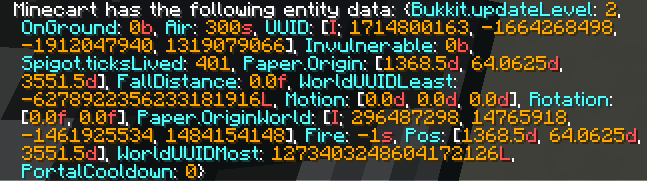

Let's Build a Selector-To-Entity Converter (or, All About UUIDs)
You’re probably familiar with UUIDs in Minecraft. They’re the weird strings of numbers and letters that everyone seems to have associated with their username—mine is e62bfa1e-f625-4ad3-9403-7e7f8e14d0f1, and you might have seen them on NameMC. We’re going to explore what they mean and why they’re useful, then build a useful function which allows you to get them for arbitrary entities.
What is a UUID?
A UUID, short for Universally Unique IDentifier, is a 32-character long hexadecimal number with dashes to separate it into blocks of 8-4-4-4-12. Hexadecimal is a number system with 16 digits (hexa = 6, deci = 10), which are 0-9 then A-F. For example, the number 23 in hexadecimal represents what we would think of as 35, since .
The “point” of UUIDs is that they really are unique, and you can (almost) guarantee this without having to put in effort into ensuring it manually. Why? Well, let’s understand the structure of UUIDs to find out.
uuid-v4.1xxxxxxxx-xxxx-4xxx-yxxx-xxxxxxxxxxxxThe 4 in position 13 represents the version of the UUID (since Minecraft uses version 4). The y in position 17 represents the variant: Minecraft uses variant 4.1, so this digit can be 8, 9, a, or b (the two most significant bits of the nibble corresponding to the 17th hexadecimal digit are set to 10, leaving the possible values as these four: 1000, 1001, 1010, 1011). This specification is described in Section 4.4 of the IETF’s RFC4122 document from 2005.
Every single other part of the UUID is generated completely at random.
Why is this unique? Well, probability!
The 13th digit is always 4. The 17th digit can be any of 4 possibilities. The 30 other digits each have 16 possibilities. This means the number of total possible UUIDs is , or over 5 billion billion billion billion. This is a mindblowingly large number. To put it in perspective, if you generated one UUID every second since the dawn of the universe, there would be an over 98% chance that they were all unique!
That’s pretty useful! We can generate these things pretty easily and cheaply, and have a guarantee that they’re unique, so we can use them as our internal references for things without worrying that something will break because we’ve given two things the same name.
How does Minecraft use UUIDs?
Minecraft does this with every entity. This means every single entity (including players) has one of these unique codes. We often have to reference these UUIDs, for example when running commands targeting an entity, or when constructing an Entity object in MSC.
Sometimes we want the UUID of an entity. Let’s see where it’s displayed in /data get entity, tried on a minecart which I know to have a UUID of 11ac0982-00e1-4f5e-a8dc-c96258766524.

That’s weird. It says UUID: [I; 296487298, 14765918, -1461925534, 1484154148]. That doesn’t look like the format we’re expecting at all!
However, let’s do some digging (okay, I do know why this happens, but I think it’s more interesting to show the process of figuring it out!). Here’s a converter which swaps numbers back and forth between decimal and hexadecimal. (Try it yourself—you can edit the numbers on either side!)
That’s interesting. 296487298 in decimal (the first number of the list) is 11ac0982 in hexadecimal (the first 8 characters of the string UUID). This obviously isn’t a coincidence. The reason for this is that Minecraft stores UUIDs in a weird format which uses four 32-bit signed integers.
A 32-bit integer is an integer which is stored using 32 binary digits, or “bits”. “Signed” means the first bit is used to denote the sign of a number: whether it’s positive or negative. Let’s convert the hexadecimal 11ac0982 to binary.
hexadecimal-binary 1 1 a c 0 9 8 2= 0001 0001 1010 1100 0000 1001 1000 001000010001101011000000100110000010 in binary is exactly 296487298. You can see how each 4 bits (also known as a nibble: , so each hexadecimal digit contains times as much information as a bit) correspond to each hexadecimal character, too.
However, you might notice something weird. If you put the third number, -1461925534, into the converter on the decimal side, you’ll notice that it doesn’t match up at all with the third octet of hexadecimal digits. We should get a8dcc962, but we get a negative number.
Okay, what number would have given us the correct answer? Sticking a8dcc962 into the hexadecimal side of the converter, we get 2833041762. On a whim, let’s calculate . So the number we wanted is exactly away from the number we have. This is interesting, because we’re dealing with 32-bit numbers! In fact, that’s exactly why this works. Let’s see how a8dcc962 is stored in binary.
hexadecimal-binary a 8 d c c 9 6 2= 1010 1000 1101 1100 1100 1001 0110 0010But now let’s take 10101000110111001100100101100010 and represent it as a 32-bit signed integer. Since the first bit is a 1, this number is negative. These numbers are written in two’s complement notation, which is a bit too advanced to go into here, but suffice it to say that
binary-decimal 1 0101000110111001100100101100010= - 1461925534Fantastic! This means we know how our numbers are stored. We’ll keep this in mind for when we’re writing our code.
What are we building and why?
A lot of the time (well, maybe for some people), you’ll be writing scripts which deal with entities. This is all well and good if you have an Entity object already, or if you just want to use default Minecraft commands. For example,
msc@bypass /minecraft:kill @e[type=pig,distance=..5,sort=nearest,limit=1]kills the nearest pig to the player if it’s within 5 blocks, and
msc@var some_namespace::clickedEntityHealth = entity.getHealth()(if applied as an entity script, so that entity is defined as the entity the script is bound to) sets the variable Int some_namespace::clickedEntityHealth to the health of the entity the script is on.
But this doesn’t cover every use-case! Sometimes you want to select entities, and do things to them that you can do in MSC. There’s no standard way to do this—you can only select entities using @e[...] if you’re using Minecraft command selectors, and you can’t run MSC things on them.
What if there was a way to turn @e[type=pig,distance=..5,sort=nearest,limit=1] into 27f6a0b7-db1c-4bfa-ac43-148a88b53c3d (or whatever the UUID of the pig really is?) Well, let’s make one!
Creating a selector-to-Entity converter in MSC
Okay, here’s what we want our function to be able to do. Say we have a pig that’s somewhere in the 20x20x20 cube centred at (123, 45, 678). We want to use it as an Entity, say to eject all its passengers (just a random example: this is one of many useful methods on Entity objects). This means we need a function which takes entity selectors (@e[...]) and returns Entity objects.
- We pass in a string like
type=pig,x=113,dx=20,y=35,dy=20,z=668, and the world we want to search in (sayTheta). - It returns an
Entityobject which corresponds to our pig.
minecraft/function define aktools Entity selectorToEntity(String selectorString, String world)This defines the function. (If this line looks confusing to you, see my functions). Let’s begin writing it.
msc# Function aktools::selectorToEntity(String selectorString, String world) -> Optional<Entity> # these are the alphanumeric characters used as digits in hexadecimal@define String[] hexadecimalDigits = String["0", "1", "2", "3", "4", "5", "6", "7", "8", "9", "a", "b", "c", "d", "e", "f"] # powers stores the value of 16^n for each n, ie. some basic higher digit value in hexadecimal@define Long[] powers = Long[268435456L, 16777216L, 1048576L, 65536L, 4096L, 256L, 16L, 1L] # stores the integer UUID being worked with at any given time# this must be a Long, as Int values are capped at 2^31 - 1 = 2,147,483,647 and we deal with larger numbers@define Long currentUUID # the characters of the UUID in hexadecimal@define String[] u = String[]This should be good setup-wise. We have a function aktools::selectorToEntity. It takes in two strings: selectorString and world, which are the strings we decided on earlier. We also have a few variables we need, which we’ll use to work with UUIDs. In the end, u will be a list with the hexadecimal digits of the UUID. Note that powers is the list of powers of 16:
powers00000001 (base 16) = 16^0 = 100000010 (base 16) = 16^1 = 1600000100 (base 16) = 16^2 = 25600001000 (base 16) = 16^3 = 409600010000 (base 16) = 16^4 = 6553600100000 (base 16) = 16^5 = 104857601000000 (base 16) = 16^6 = 1677721610000000 (base 16) = 16^7 = 268435456Now, let’s work with them. We need to get the UUID from the selector. We know from /data get entity earlier that this is stored as a four-part list, so we’re going to have to get it with four commands. Let’s begin writing this loop:
msc# UUIDs are stored as four decimal integers, so this gets all of them one-by-one@for Int i in list::range(0, 4) # minecraft command to get UUID - must be stored as a Long for further processing @var currentUUID = Long(util::executeAndQueryResult("/execute in {{world}} run data get entity @e[{{selectorString}},limit=1] UUID[{{i}}]")) # do some processing to convert them into hexadecimal... @doneWe use util::executeAndQueryResult to steal a number from Minecraft’s /data get entity and get it into MSC. The command we’re using is
minecraft/execute in {{world}} run data get entity @e[{{selectorString}},limit=1] UUID[{{i}}]which is exactly what we want, for each (this is what the list::range part does: as usual in programming, the numbering starts from 0)! It might look like
minecraft/execute in minecraft:theta run data get entity @e[type=pig,x=113,dx=20,y=35,dy=20,z=668,limit=1] UUID[0]for the first number of the four. Now, let’s work on converting it to hexadecimal. Do you remember the issue with negative numbers being off where they needed to be? Well, this fixes that! We add to all negative numbers we get, to make them the corresponding positive number which we can then convert into hexadecimal as usual.
msc # half the time, this number is negative due to integer overflows. # this line makes it positive: 4294967296 is the unsigned 32-bit integer limit, equal to 2^32. @if currentUUID < 0 @var currentUUID = Long(4294967296L + currentUUID) @fiHow do we convert a Long into an eight-digit hexadecimal number? We use the fact that a hexadecimal number like 27f6a0b7 is really
hexadecimal (2 = 2) × (16^7 = 268435456) = 536870912+ (7 = 7) × (16^6 = 16777216) = 117440512+ (f = 15) × (16^5 = 1048576) = 15728640+ (6 = 6) × (16^4 = 65536) = 393216+ (a = 10) × (16^3 = 4096) = 40960+ (0 = 0) × (16^2 = 256) = 0+ (b = 11) × (16^1 = 16) = 176+ (7 = 7) × (16^0 = 1) = 7------------------------------------------- = 670474423and so by decomposing a number like 670474423 into the form
we can reverse this process and get the sequence of digits we need. We use a greedy algorithm to do this: for each base, take off as many as possible (maximise , then , then …). For our specific example of , we would do:
decimalcurrent number we're working with is 670,474,423.2 × 16^7 = 536,870,912 <= 670,474,423 < 805,306,368 = 3 × 16^7├── digit in position 1/8 is a 2.└── subtract 536,870,912 from current number to get 133,603,511. current number we're working with is 133,603,511.7 × 16^6 = 117,440,512 <= 133,603,511 < 134,217,728 = 8 × 16^6├── digit in position 2/8 is a 7.└── subtract 117,440,512 from current number to get 16,162,999. ... current number we're working with is 183.11 × 16^1 = 176 <= 183 < 192 = 12 × 16^1├── digit in position 7/8 is a b (corresponding to 11 in decimal).└── subtract 176 from current number to get 7. current number we're working with is 7.so last digit is a 7. so the full hexadecimal number is 27f6a0b7.Let’s implement this in code, using :
msc # converts decimal to hexadecimal using backwards-iterating powers of 16 @for Long pow in powers # adds the correct hex character to the list u @var u.append(hexadecimalDigits[Int(currentUUID / pow)]) # reduces the UUID by stripping off the first hex digit (which is a subtraction in decimal) @var currentUUID = Long(currentUUID - Long(Int(currentUUID / pow) * pow)) @doneHere, Int(currentUUID / pow) is the biggest multiple of you can take off the number you’re working with. This is then the next digit of the UUID in hexadecimal, so we can add it to our list (line 5 of the above code block).
We then need to remove it to “trim” the first hexadecimal digit. This is done with line 7. We take off Long(Int(currentUUID / pow) * pow), which is equal to . This means we can repeat the process with the next largest power of 16.
And with that, we’re pretty much done! We just need to do this for all four parts of the UUID (the four integers, as Minecraft stores them), and we can concatenate them together to get our UUID. In fact, we get this for free. Since we’re looping through in order, and each digit is just appended to the list, all four parts are automatically in the right order after each other. Isn’t that neat?!
Putting this loop all together, we get
msc# UUIDs are stored as four decimal integers, so this gets all of them one-by-one@for Int i in list::range(0, 4) # minecraft command to get UUID - must be stored as a Long for further processing @var currentUUID = Long(util::executeAndQueryResult("/execute in {{world}} run data get entity @e[{{selectorString}},limit=1] UUID[{{i}}]")) # half the time, this number is negative due to integer overflows. # this line makes it positive: 4294967296 is the unsigned 32-bit integer limit, equal to 2^32. @if currentUUID < 0 @var currentUUID = Long(4294967296L + currentUUID) @fi # converts decimal to hexadecimal using backwards-iterating powers of 16 @for Long pow in powers # adds the correct hex character to the list u @var u.append(hexadecimalDigits[Int(currentUUID / pow)]) # reduces the UUID by stripping off the first hex digit (which is a subtraction in decimal) @var currentUUID = Long(currentUUID - Long(Int(currentUUID / pow) * pow)) @done@doneThere’s just one last thing left to do: convert the list of hexadecimal digits into a UUID, and use it to construct an Entity.
msc# UUIDs have dashes in them splitting the 32-character UUID into blocks of 8-4-4-4-12@define String stringifiedUUID = u[0] + u[1] + u[2] + u[3] + u[4] + u[5] + u[6] + u[7] + "-" + u[8] + u[9] + u[10] + u[11] + "-" + u[12] + u[13] + u[14] + u[15] + "-" + u[16] + u[17] + u[18] + u[19] + "-" + u[20] + u[21] + u[22] + u[23] + u[24] + u[25] + u[26] + u[27] + u[28] + u[29] + u[30] + u[31]@return Entity(stringifiedUUID)This just adds all the characters together, with dashes in the right places, as we mentioned earlier. Then, it makes an Entity object in MSC based on this UUID, and returns it to you. (This might be null, but it won’t error - the onus is on the user to ensure their entity exists.)
Fantastic! The only thing left to do is to put all this code together.
msc# Function aktools::selectorToEntity(String selectorString, String world) -> Optional<Entity> # these are the alphanumeric characters used as digits in hexadecimal@define String[] hexadecimalDigits = String["0", "1", "2", "3", "4", "5", "6", "7", "8", "9", "a", "b", "c", "d", "e", "f"] # powers stores the value of 16^n for each n, ie. some basic higher digit value in hexadecimal@define Long[] powers = Long[268435456L, 16777216L, 1048576L, 65536L, 4096L, 256L, 16L, 1L] # stores the integer UUID being worked with at any given time# this must be a Long, as Int values are capped at 2^31 - 1 = 2,147,483,647 and we deal with larger numbers@define Long currentUUID # the characters of the UUID in hexadecimal@define String[] u = String[] # UUIDs are stored as four decimal integers, so this gets all of them one-by-one@for Int i in list::range(0, 4) # minecraft command to get UUID - must be stored as a Long for further processing @var currentUUID = Long(util::executeAndQueryResult("/execute in {{world}} run data get entity @e[{{selectorString}},limit=1] UUID[{{i}}]")) # half the time, this number is negative due to integer overflows. # this line makes it positive: 4294967296 is the unsigned 32-bit integer limit, equal to 2^32. @if currentUUID < 0 @var currentUUID = Long(4294967296L + currentUUID) @fi # converts decimal to hexadecimal using backwards-iterating powers of 16 @for Long pow in powers # adds the correct hex character to the list u @var u.append(hexadecimalDigits[Int(currentUUID / pow)]) # reduces the UUID by stripping off the first hex digit (which is a subtraction in decimal) @var currentUUID = Long(currentUUID - Long(Int(currentUUID / pow) * pow)) @done@done # UUIDs have dashes in them splitting the 32-character UUID into blocks of 8-4-4-4-12@define String stringifiedUUID = u[0] + u[1] + u[2] + u[3] + u[4] + u[5] + u[6] + u[7] + "-" + u[8] + u[9] + u[10] + u[11] + "-" + u[12] + u[13] + u[14] + u[15] + "-" + u[16] + u[17] + u[18] + u[19] + "-" + u[20] + u[21] + u[22] + u[23] + u[24] + u[25] + u[26] + u[27] + u[28] + u[29] + u[30] + u[31]@return Entity(stringifiedUUID)You can also download it here:
Thanks for reading! UUIDs are pretty cool, but they’re often weird and unintuitive, especially in the way Minecraft handles them. Hopefully this clears some of the weird behaviour up!